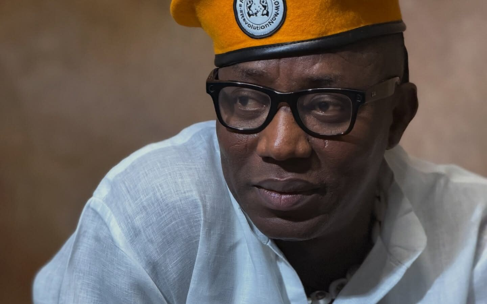

Sowore releases video of alleged attackers, alleges erased CCTV footage in Ekiti

Omoyele Sowore has released a video that he says shows individuals involved in an attack on his team in Ado-Ekiti, Ekiti State, on 30 October. The African Action Congress presidential candidate described the footage as a breakthrough but called for an independent investigation to establish who the people shown are and what roles they played.
The video appears to show men carrying cutlasses and sticks during a confrontation, while a person in a black suit is dragged. Bystanders can also be seen. The footage has not, in the supplied account, been independently verified as showing the people responsible for the incident.
Sowore also alleged that surveillance recordings from Tawakalitu Restaurant, where the incident occurred, were erased after police and State Security Service (SSS), also known as the Department of State Services (DSS), operatives took possession of the CCTV equipment. He said the equipment was returned to the restaurant without recordings. According to Sowore, restaurant management confirmed its return but declined to identify the officer who brought it back. He called on the police and SSS to release the footage and accused police officials of mishandling the investigation.
The allegations follow Sowore’s claim that suspected political thugs attacked him and members of his team. The Ekiti State Police Command described the event as an altercation at a restaurant. It said officers responded to information about the incident, rescued Sowore, who sustained minor injuries, and that the Commissioner of Police, Michael Falade, ordered a discreet investigation to establish what happened and identify those responsible.
Sowore said he had asked Falade, Ado-Ekiti Central Divisional Police Officer Mustapha Mohammed and the Rapid Response Squad commander for an update. He claimed they told him there was no complainant because he had not provided a written statement. Sowore challenged that explanation, saying police had intervened and, according to him, arrested suspects and recovered weapons, phones and other devices. He also called for the removal of the state Commissioner of Police and other officers he accused of mishandling the case.
Source: Premium Times